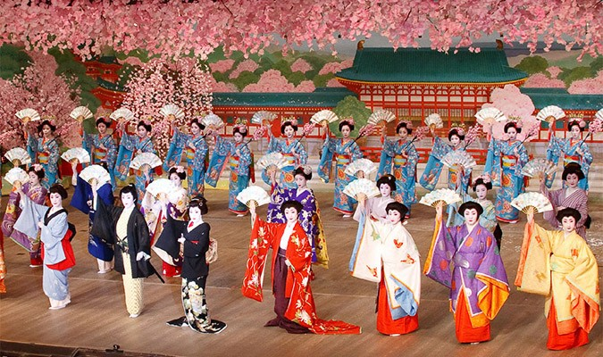

1. Tổng quan quốc gia
Nhật Bản là một quốc gia nằm ở Đông Á, nổi tiếng với nền văn hóa đặc sắc, nền kinh tế phát triển và phong cảnh thiên nhiên tuyệt đẹp. Đất nước này là sự hòa quyện giữa truyền thống và hiện đại, từ những ngôi đền cổ kính đến các thành phố công nghệ cao.
Đến với nước Nhật, bạn sẽ dễ dàng gặp cảnh sinh viên ngủ gục trên bàn, đó là do họ đã học cả ngày. Nhiều người còn mang theo cả đồ ăn vào để tranh thủ vừa ăn vừa học tại các thư viện… Bên cạnh đó, đi trên các toa tàu điện ngầm, người Nhật còn tranh thủ thời gian để ngủ bù, người không ngủ thì cũng tranh thủ đọc sách. Với mục đích để bổ sung kiến thức, họ luôn tiết kiệm từng phút. Người Nhật sống rất tuân thủ các quy tắc như luôn đúng giờ, yêu công việc,....Ngoài ra, họ còn rất tinh tế trong các thiết kế của mình.
Nhật Bản nằm trong khu vực có khí hậu ôn đới và cận nhiệt đới. Nhật Bản có 4 mùa: xuân, hạ, thu, đông. Mùa xuân Nhật Bản có khí hậu lạnh dễ chịu, ở mức 12 độ C. Mùa hạ ở Nhật có nhiệt độ tăng cao nhưng khá tương đồng với nước ta. Mùa thu với thời tiết mát mẻ và mùa đông lạnh có tuyết rơi.Khi đến Nhật Bản vào mùa đông bạn phải đặc biệt chú ý việc giữ ấm cơ thể vì Nhiệt độ chênh lệch khá nhiều so với nước ta.
2. Hệ thống giáo dục
Hệ thống giáo dục Nhật Bản rất tiên tiến, tập trung vào sự phát triển toàn diện cho học sinh và sinh viên. Các trường đại học tại Nhật Bản nổi tiếng về nghiên cứu và giảng dạy trong nhiều lĩnh vực. Các loại hình trường học tại Nhật Bản:
- Mẫu giáo (1 đến 3 năm)
- Tiểu học (6 năm, từ 6 đến 12 tuổi)
- Trung học cơ sở (3 năm, từ 13 đến 15 tuổi)
- Trung học phổ thông (3 năm)
- Cao đẳng (2 năm, có khoa học 3 năm)
- Cao đẳng kỹ thuật (Từ 5 đến 5,5 năm)
- Đại học ngắn hạn (2 năm)
- Đại học chính quy (4 năm)
- Trường dạy nghề (1 năm trở lên)
- Trường trung cấp (1 năm trở lên)
3. Các đại học nổi bật
- Đại học Tokyo
- Đại học Kyoto
- Đại học Osaka
- Đại học Tohoku
- Viện công nghệ Tokyo
- Đại học Keio
Xem thêm: Top 10 trường đại học tốt nhất Nhật Bản
4. Thủ tục xin visa
Hồ sơ xin visa du học Nhật Bản:
- Các loại giấy tờ cá nhân: Ảnh kích thước 4x6cm, giấy khai sinh bản sao công chứng, 2 bản sao CMND/CCCD công chứng, sổ hộ khẩu bản sao có công chứng, hộ chiếu, sơ yếu lý lịch bản gốc có xác nhận của địa phương, giấy khám sức khỏe. Ngoài ra, nếu đã từng đi làm, bạn cần bổ sung giấy xác nhận công việc.
- Các loại giấy tờ học vấn: Bằng tốt nghiệp cấp học gần nhất bản gốc và bản sao công chứng, thẻ sinh viên (nếu có), học bạ hoặc bảng điểm, giấy chứng nhận về trình độ năng lực tiếng Nhật.
- Các loại giấy tờ chứng minh tài chính: Sổ tiết kiệm tối thiểu 500 triệu, các giấy tờ chứng minh nguồn thu nhập của du học sinh hoặc người bảo hộ phải ở mức tối thiểu là 300 triệu/năm. Nếu là hộ kinh doanh, cần có giấy phép kinh doanh, giấy tờ thuế.
Quy trình xin visa du học Nhật Bản:
- Bước 1: Chuẩn bị đầy đủ các loại giấy tờ theo hướng dẫn ở phần trên.
- Bước 2: Sau khi đã hoàn thành các thủ tục giấy tờ đầy đủ, bạn tiến hành nộp hồ sơ tại Đại sứ quán Nhật theo đúng những địa điểm đã quy định. Du học sinh phải trực tiếp đến nộp hồ sơ.
- Bước 3: Sau khi xét duyệt hồ sơ, Đại sự quán sẽ gửi thư mời phỏng vấn cho học viên. Sau đó vài ngày, bạn có thể được phỏng vấn. Nội dung cuộc phỏng vấn xin visa rất đơn giản. Du học sinh sẽ thường phải trả lời những câu hỏi về các chuyên ngành đã đăng ký học.
- Bước 4: Chờ kết quả và nhận visa.
Xem thêm: Xin visa du học Nhật Bản